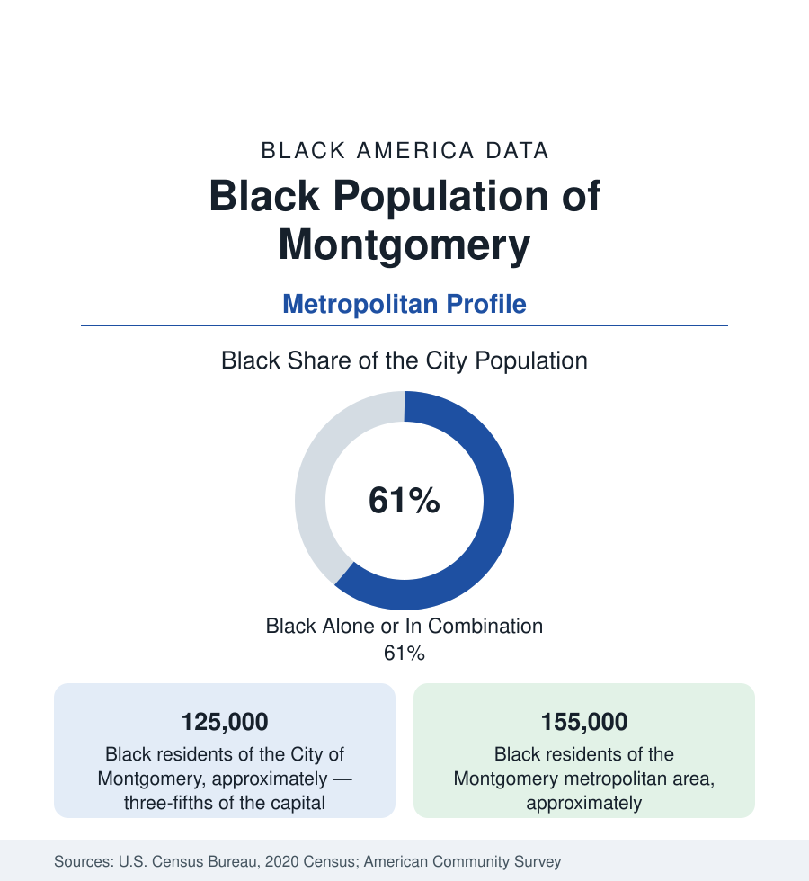

Black Cities
Black Montgomery: The Cradle of the Confederacy and the Capital of the Movement
Montgomery holds about 125,000 Black residents in the city and 155,000 across the metro — a majority-Black capital holding both foundings. The census profile.

Montgomery holds about 125,000 Black residents within the city — Black alone or in combination, roughly three-fifths of its 200,000 people — and about 155,000 across the metropolitan area. No American city carries a heavier double entry in the record: first capital of the Confederacy and, ninety-four years later, the city whose 381-day bus boycott reorganized the nation's conscience. The data of the modern capital — majority Black, state-government employed, monumentally interpreted — are the working-out of both foundings.
Dexter Avenue and the Two Capitols
The geography is legible from one street corner: Dexter Avenue, where the Alabama State Capitol (the Confederacy's first capitol, Jefferson Davis inaugurated on its steps) stands at the head of the avenue, and a block down it, Dexter Avenue King Memorial Baptist Church — Dr. King's first pastorate, the boycott's organizing room — with the Civil Rights Memorial and the Southern Poverty Law Center's ground a few blocks beyond, and the Legacy Museum and the National Memorial for Peace and Justice (the Equal Justice Initiative's 2018 sites) drawing the interpretation economy a half-mile north. The residential map spreads from that center: the west side's historic neighborhoods (Cottage Hill's edge, the Centennial Hill district around Alabama State), the south side's growth, the eastern subdivisions along Atlanta Highway and the Vaughn Road corridor where the middle class has sprawled — and Alabama State University (1867, founded as Lincoln Normal School in Marion, among the nation's oldest HBCUs) anchoring the south edge of downtown with its campus growing toward the interstate.
State Government, Air Force, and the Assembly Lines
The employment data run on the capital's payrolls: state government (Alabama's agencies and the capitol complex — the Black professional class of the statehouse file, administrators and staff across the bureaucracy the majority city staffs), Maxwell Air Force Base and Gunter Annex (the Air University — the service's education capital — its officers and civilians a rotating professional tier), Hyundai's assembly plant (the Korean automaker's first U.S. plant, on the county's southern edge since 2005 — thousands of production jobs and the supplier parks strung along the I-65 and I-85 corridors), and the healthcare systems (Baptist Health's flagships). The indicators record a government-and-assembly economy: median incomes in the Southern band, public-sector stability in the distributions, poverty concentrated in the west-side legacy tracts, homeownership across the eastern sprawl — and the heritage-tourism file (the Legacy Sites' hundreds of thousands of annual visitors; the Freedom Rides Museum in the old Greyhound station) as the growth sector the boycott built.
1955 and the Long Aftermath in the Data
The boycott's institutional descendants are in the modern numbers: the Women's Political Council's city (Jo Ann Robinson's organization printed the leaflets), the Montgomery Improvement Association's churches still anchoring the west side, and a political file that runs from the Fred Gray litigations through the majority-Black council and the county's modern leadership. The education data carry both the ASU file and the public district's (Montgomery Public Schools, overwhelmingly Black enrollment, its state-intervention chapter of the late 2010s in the record) — and the private-academy geography of the eastern suburbs as the counterpoint file. The truth-telling infrastructure (EJI's sites, the city's marker programs) has made Montgomery the national capital of the memory economy — a distinction the visitor data now measure.
Change and the Estimates
The estimates show the metro's growth tilting east and north — Prattville (Autauga County) and Pike Road and Wetumpka (Elmore) booming as the capital's suburban ring, diluting the metro share while the city's three-fifths majority holds — with the plant and base payrolls stable and the downtown and Dexter corridor reinvestments (the riverfront, the Biscuits' ballpark district in the old train shed) as the current files. The interstate junction's logistics growth along I-85 toward Auburn adds the newest employment line.
Reading the Montgomery Numbers
Montgomery's 155,000 metro Black residents inhabit the most interpreted ground in America: the avenue where the Confederacy was sworn and the church where the movement answered, in the same block, in the same data. A majority-Black state capital governing itself an hour from Selma — the boycott's destination, reached, held, and still being surveyed daily.
More in Black Cities
Black Atlanta: Population, Distribution, and Growth of a Black Metropolis
Metro Atlanta holds more than two million Black residents — roughly one in three, second only to New York. The suburban distribution, migration history, and composition of Black Atlanta in the census data.
Black New York: The Largest Black Population in America
The New York metropolitan area holds about 3.4 million Black residents — more than any metro in the nation — and the city itself about two million. The census profile.
Black Washington: The District and the Metro
The Washington metro holds about 1.6 million Black residents, and the District itself — long a majority-Black city — now records a Black share near 41 percent. The census profile.
Source: U.S. Census Bureau, 2020 Census; American Community Survey; Population Estimates Program.